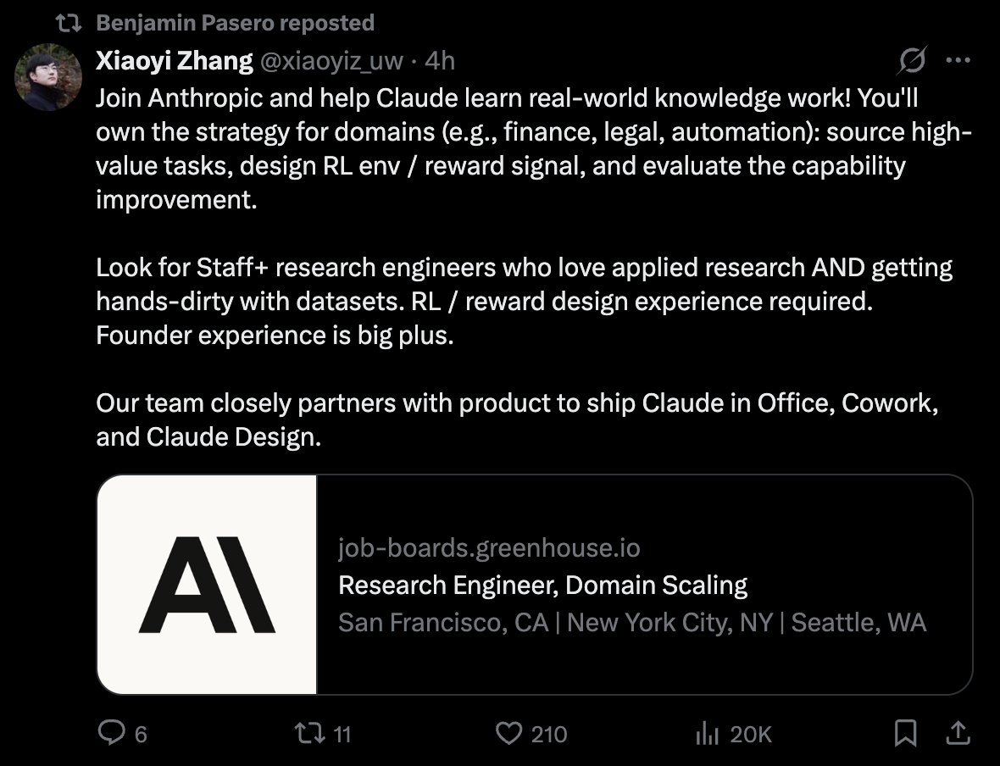
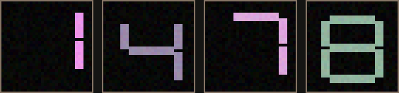

A 25.7M teaching-scale implementation inspired by GLM-5.3-Flash.
# Complete this Python function.
# Double the input.
def double_bimbxfa(x):
Follow one model through the complete learning process.
You will understand the mechanism well enough to change the experiment yourself.
The pre-training studies use 10 paired seeds. The vision studies are bounded pilots. The RL section contains both a before-and-after result and a failed replication.
These are the real training and held-out results we will reproduce and explain.
A small, untrained language model that learns to write simple Python.
The real model is too large for a hands-on tutorial. This version keeps the main architectural ideas while making every step visible.

This Anthropic training role focuses on data and environments – not inventing a new model algorithm.
Researchers choose what the model should practice, build tasks with automatically verifiable outcomes, and turn those checks into rewards.
Algorithms control how weights update. Data and environments control what the model learns.
Evaluation changes the generated function name, but keeps the same eight operation templates.
At every position, the model sees all earlier bytes and assigns probabilities to what comes next.
return x +1For ASCII Python, one byte is usually one visible character. Every wrong probability becomes a training signal.
Which reinforcement-learning choice produces the largest improvement on held-out instances?
A fair experiment keeps every other source of advantage fixed.
The first score chooses what to retest. It does not prove the conclusion.
Join our Skool community and work through AI research tasks like a small research lab.
Frequent byte sequences are merged into reusable chunks.
def increment(x):→For ASCII code, one byte is one character. Unicode characters may use multiple bytes.
| Released model | Teaching model | |
|---|---|---|
| Parameters | 320B | 25.7M |
| Layers | 45 | 12 |
| Active experts | 8 of 288 | 2 of 8 |
| Tokenizer | BPE · 154,880 | bytes · 260 |
| Context | 1M | 192 |
Small enough for Mac, NVIDIA GPU, or CPU · trained from random initialization
First, we test vision in a 60,924-parameter miniature. Then we attach it to the full 25.7M language model.The production model and our miniature use the same high-level path.
[batch, 3, 32, 32] RGB floats from 0 to 1.The encoder rejects other shapes. An arbitrary image must first be decoded as RGB, cropped or padded to a square, and resized to 32 × 32.Why 16 tokens? 32 ÷ 4-pixel patches = 8 patches per side. Then 8 ÷ 2-way merge = 4 tokens per side. 4 × 4 = 16.Special tokens mark exactly where the image belongs.
embeddings[image_mask] = vision_encoder(images) logits = language_model.forward_embeddings(embeddings)
Read noisy, shifted RGB seven-segment digits and answer with the correct character.

What is held out? Both splits contain digit classes 0 – 9. Evaluation holds out the exact pixels: new shifts, colors, intensities, and noise. This tests recognition of new renderings, not unseen digit categories.
Exact top-1 accuracy on the same 200 fixed held-out images. Both models saw identical data, seeds, updates, and batches.
This is an integration test, separate from the miniature adapter comparison.
What actually learned? The vision encoder, final LM block, final norm, and tied byte embedding/output matrix. Gradients still passed through the frozen layers so the vision encoder could learn inputs the existing language path could use.
Initialized from coding checkpoint 100 · one synthetic task and one seed · no checkpoint was saved.Initialize the 25.7M-parameter model with random weights.
Predict the next byte across complete Python programs.
Generate code and reward only programs that pass hidden tests.
Compare the same frozen unseen tasks before and after training.
+43 → token 47→
LEARNED VECTOR→
12 MODEL BLOCKSattention + experts→
NEXT-BYTE SCORES1):
The model turns one byte into numbers, transforms them, and ranks every possible next byte.
We will build each one from scratch.
AI can write syntax. Your job is to understand the algorithm.
embedded = self.embedding(input_ids)
streams = embedded.unsqueeze(2).expand(
-1, -1, self.config.streams, -1
).contiguous()
usages = []
for layer in self.layers:
streams, usage = layer(streams)
usages.append(usage)
hidden = self.final_norm(streams.mean(dim=2))
return self.output(hidden), torch.stack(usages)self.embedding(input_ids)The idea: a token ID is an address. The embedding layer retrieves that token's learned vector.
unsqueeze(2) → expand(-1, -1, 4, -1)one complete vector x → [x, x, x, x]It creates four identical starting streams. The vector is not divided; later network layers make each stream different.Why: several residual paths let each block choose which mixtures to read and which streams receive its update.B = batch · T = tokens · D = vector width
streams, usage = layer(streams)Read once, write four ways.For each token, softmax turns four learned input scores into α. Their weighted sum m is the only vector processed by the hybrid block.The block uses attention to gather token context, then MoE to compute update Δ. A second softmax produces β, and stream s keeps its old value while receiving βₛΔ.usage records how much traffic each MoE expert received. Training uses it for router balancing; it is not a fifth stream.
self.final_norm(streams.mean(dim=2))Merge: average the four routes, then normalize their shared result.Why: the output head needs one stable vector per token, not four separate streams.
self.output(hidden)Predict: the highest score becomes the model's next generated byte.
attention_norm(x)Same direction, controlled magnitude, steadier updates.
q, k = apply_rope(q, k)RoPE rotates pairs of query and key values by an angle based on token position. Comparing their angles lets attention detect order and relative distance without adding a learned position vector.
Our miniature: RoPE in both attention types. Released GLM-5.3-Flash: NoPE in main attention; RoPE only in the sparse indexer.NoPE means “No Positional Encoding.” The main attention vectors receive no explicit position rotation.
The teaching model repeats this four-layer rhythm three times
Why combine them? Linear layers carry compressed history cheaply; sparse layers periodically recover exact distant details.
Released GLM: 34 KDA linear layers + 11 sparse layers across 45 layers.One condition selects the attention algorithm for every layer.
self.layers = nn.ModuleList([
HyperConnection(
config,
HybridBlock(
config,
sparse=((index + 1) % 4 == 0),
),
)
for index in range(config.layers)
])
self.attention = (
SparseAttention(config) if sparse
else LinearAttention(config)
)index + 11. Count naturally: convert zero-based indices into layers 1 through 12.
(index + 1) % 4 == 02. Mark every fourth layer: layers 4, 8, and 12 become sparse.
SparseAttention if sparse else LinearAttention3. Choose the mechanism: all other layers use linear attention.
Each token updates one compact prefix state
Why: the state stays fixed in size as context grows, making long sequences cheaper than storing every key and value. The tradeoff is compressed history.
Teaching model: ELU feature maps + prefix sums. Released GLM: KDA recurrent state + short convolution.Local window + regularly spaced anchors
Why: selected tokens preserve exact details that a compressed running state may blur or forget.
Teaching model: fixed local + strided positions. Released GLM: a learned indexer selects 2,048 positions; IndexPool compresses four index keys into one.Two routed experts + one shared expert
Why: MoE gives the model many specialist parameter sets without running every specialist for every token.
Teaching model: 2 of 8 routed + 1 shared. Released GLM: 8 of 288 routed + 1 shared.Released GLM gives each sublayer its own hyperconnection.
Precisely: attention reads one learned mixture and writes its update back across four streams. Those four streams are preserved. MoE then reads a new mixture of them and routes a second update back.
Released GLM: separateattn_hc and ffn_hc, with manifold-constrained stream mixing. Our miniature: one simpler hyperconnection wraps attention + MoE together, so it does not restore four streams between them.
ModelConfig(
vocab_size=260,
dim=192,
layers=12,
heads=6,
experts=8,
top_k=2,
streams=4,
max_sequence_length=192,
)Why these values: large enough to demonstrate every mechanism, but small enough to train the whole model quickly.
def forward(self, x):
x = x + self.attention(self.attention_norm(x))
ffn, usage = self.moe(self.ffn_norm(x))
return x + ffn, usage
Attention moves information between token positions. MoE applies specialist transformations to each position. Residual additions preserve the previous representation while adding both updates.
self.output.weight = self.embedding.weight
One matrix learns both token embeddings and output logits. Weight tying removes a second large matrix and makes reading and predicting bytes use the same learned geometry.
# Return x plus one.
def increment_qrdadnk(x):
return x + 1The language checkpoint did not see images during pre-training. Vision was a separate experiment that reused the trained language model.
What “held out” means here: evaluation uses new generated function names and examples, but not new algorithms. This measures learning within eight synthetic coding families.
return x + 1↳ next byte
ret→u
SEEreturn→
SEEreturn x→
SEEreturn x + →1
Why this is efficient: one program is not one training label. A 100-byte sequence creates about 99 next-byte prediction targets. Randomized function names reduce exact string memorization.
1 gets 8%1 means high loss1 becomes more likely next timeFor this position, the correct next byte is 1.
The update does not store a line of code in one place. It slightly changes millions of shared weights so the correct byte becomes more likely in many related contexts.
# Return two times x.
def double_ywkaoot(x):
::::::::::::::::::invalid · 0 / 3 tests return x * * 0 0invalid · 0 / 3 tests return x * 2valid · 3 / 3 testsWhy RL starts at step 100: the model has learned Python-like structure but is still wrong, leaving measurable room for post-training. Step 200 had seen 691,022 training bytes.
Exact greedy outputs from GPU checkpoints 0, 100, and 200 · same prompt · same runThree controlled experiments ask how data diversity, order, and curriculum change learning.
add → multiply → absolute valueabs((x + 3) * 4)For every seed, two identically initialized models receive the same number of updates.
Same 248K-parameter model, optimizer, batch size, evaluation, and paired seeds. Only the number of unique program structures changes.
Result: diversity was not useful at 50 updates. At 200 updates, 88 structures reached 60.2% versus 57.0%, a paired +3.2 point gain.
10 paired seeds · 32 unseen structures · exact paired permutation p = 0.0137 at 200 updates · exact-expression accuracy remained 0%Both models see the exact same 4,800 examples. We change only when each example appears.
All 10 paired seeds favored interleaving in the matched ordering run. Long homogeneous blocks likely increase recency bias or forgetting, but this experiment measures the effect, not the internal mechanism.
Bootstrap 95% interval: +7.6 to +11.7 points · exact paired permutation p = 0.00195 · held-out target-byte accuracyThe curriculum hypothesis: repetition may teach basic patterns before the model faces more combinations.
If the curriculum creates a useful foundation, it should beat diverse interleaving from the beginning.
The curriculum repeats 8 structures for 100 updates, then expands to 88 for the final 100.
The curriculum beat repeating only 8 structures by +2.6 points, but it did not beat diverse interleaving from the start. Delaying diversity produced no reliable advantage.
10 paired seeds · curriculum vs repeat p = 0.0117 · curriculum vs diverse p = 0.2148 · no reliable curriculum advantageStrongest result: with identical data and compute, interleaving improved held-out accuracy from 50.5% to 60.2% and won across all 10 paired seeds.
Both branches reuse the same partially trained language model. They answer different questions and are not one combined multimodal-RL run.
No reference solution is required. The model explores by sampling programs. Hidden tests convert each complete attempt into a numerical reward, and RL makes successful attempts more likely.
The model samples many programs for development prompts. More pass the executable tests as training continues.
We tested the same 24 new function names from the three trained operation families.
Interpretation: the gain is statistically clear on this frozen synthetic benchmark. It does not prove broad coding improvement because evaluation reuses the trained operation families and prompt templates.
# Return two times x.
return x * xreturn x * 2The prompt and decoding settings are identical. RL did not copy this answer from a label – it increased the probability of behavior that had passed executable tests during training.
Exact sampled outputs from the immutable confirmation receiptsThe reward evaluates behavior, not writing style. Partial correctness receives no success reward here, while a small syntax penalty teaches the model to avoid wasting rollouts on code that cannot run.
tree = validate_source(source, task.entry_point)
exec(compile(tree, "candidate.py", "exec"), namespace)
function = namespace[task.entry_point]
for arguments, expected in task.cases:
actual = function(*arguments)
passed += int(type(actual) is type(expected)
and actual == expected)
The prompt never reveals these input-output cases. A completion earns +1 only when it compiles, defines the required function, returns the right type, and matches every expected value. Unsafe syntax and imports are rejected first.
Sampling creates different candidate programs from the same policy. The group gives us both exploration and a local comparison: which attempts were better than this model’s other attempts on the exact same prompt?
advantageᵢ = rewardᵢ − mean(other rewards)The other attempts create a prompt-specific baseline: the update asks whether this completion was unusually good for the same task, without training a separate critic.
Last block + final normalization + tied output head
This makes the experiment faster and reduces forgetting. The final block changes features; the tied head converts those features into different next-byte probabilities.
generations = generate_group(model, task, group_size=16) rewards = [reward_for(task, g) for g in generations] advantages = leave_one_out(rewards) log_probs = completion_log_probabilities(model, generations) loss = -(advantages * log_probs).mean() loss.backward() optimizer.step()
The current policy generates its own attempts. Executable rewards say which attempts worked; no reference completion or critic is supplied.
We inspect confirmation only after choosing the checkpoint. Repeatedly checking it would turn it into another development set.
RL improved the practiced behaviors, but did not make the model uniformly better.
This is specialization, not a general intelligence gain. Increment and double improved, even stayed flat, and two previously strong families regressed because only a narrow parameter surface was optimized for the practiced reward distribution.
Executable feedback made narrow coding behaviors more reliable
Same checkpoint · same data · exactly 128 sampled programs per arm
Group size 4 looked best on dev. Fresh seeds reversed the conclusion.
| Training seed | Group 8 | Group 4 | Difference |
|---|---|---|---|
| 31415 | 12 / 40 | 13 / 40 | +1 |
| 27182 | 14 / 40 | 13 / 40 | −1 |
| 16180 | 11 / 40 | 8 / 40 | −3 |
None of the four RL changes produced statistically significant improvement.
Next question: does temperature 0.20 replicate across fresh seeds?The honest conclusion: we built a complete miniature research pipeline and measured narrow learning. We did not reproduce the 320B system or demonstrate general coding intelligence.